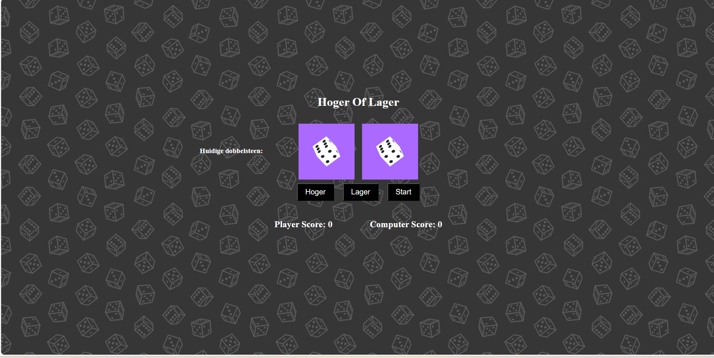
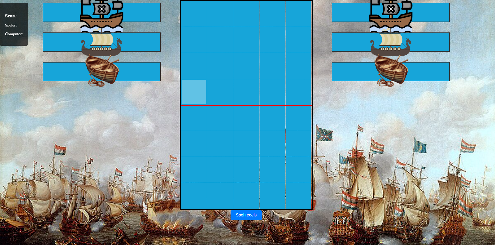
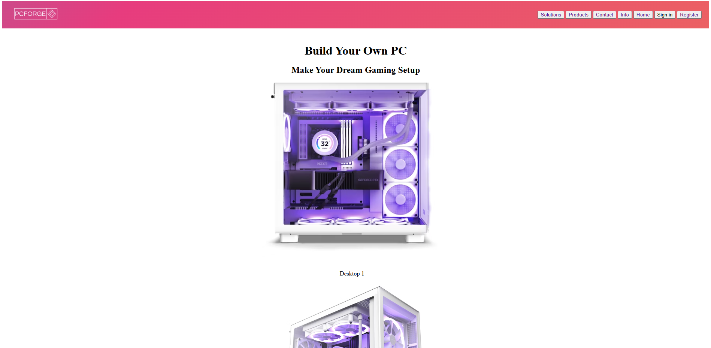
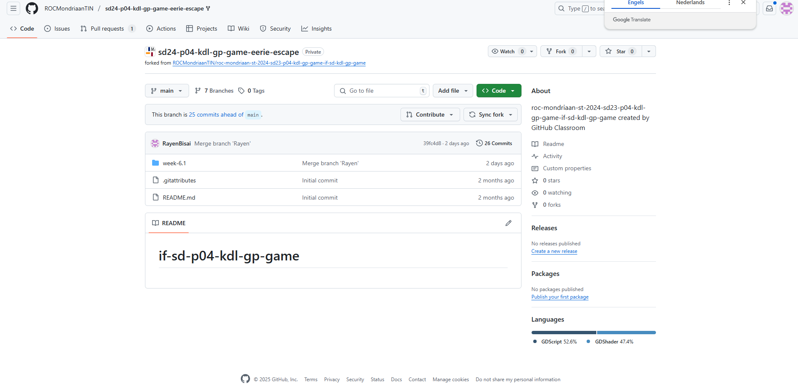

Hoger Lager
Een interactieve game waarin je voorspelt of de volgende waarde hoger of lager wordt.
Mijn werk
Van kleine JavaScript-games tot webapplicaties met databases: ieder project helpt mij beter bouwen.

Een interactieve game waarin je voorspelt of de volgende waarde hoger of lager wordt.

Een spel waarin spelers tegen elkaar kunnen strijden met een duidelijke spelinterface.

Een webapplicatie waar gebruikers reviews kunnen plaatsen en producten kunnen bekijken.

Een 3D doolhof-horrorgame waarin je puzzels oplost en onverwachte momenten tegenkomt.
In mijn opleiding heb ik verschillende webapplicaties en games gemaakt. Daarbij heb ik gewerkt met frontend- en backendtechnieken, databases, CRUD-functionaliteiten en Git/GitHub.